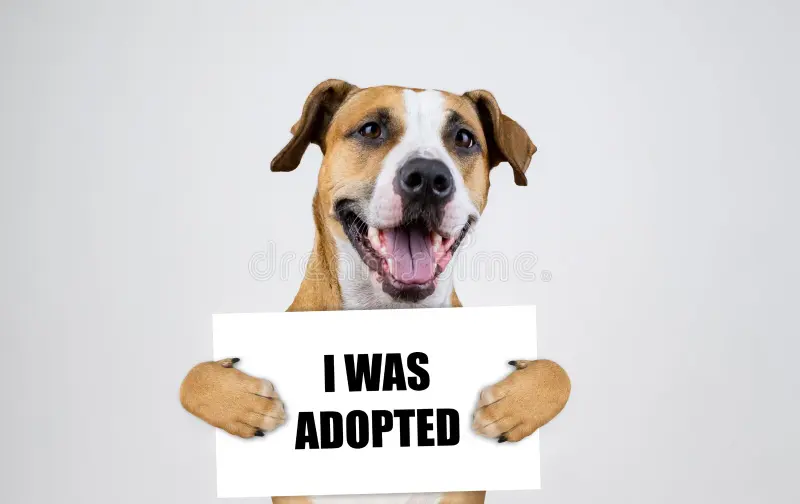

Thank You for Adopting!
Your adoption has been successfully processed.
Our team will contact you shortly.
Return to explore other pets
Your adoption has been successfully processed.
Our team will contact you shortly.
Return to explore other pets